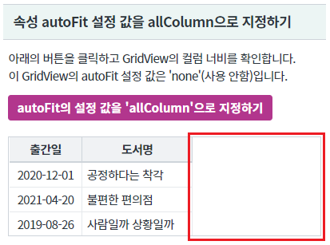
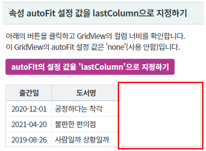
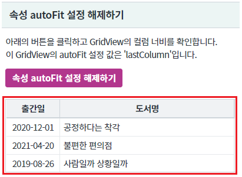
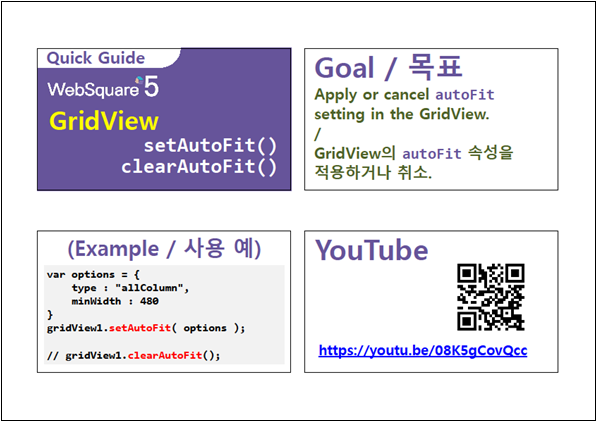

GridView의 속성 autoFit을 스크립트로 지정하는 예제입니다. GridView의 함수 setAutoFit, clearAutoFit으로 제어할 수 있습니다. - 함수 setAutoFit : autoFit 속성을 지정합니다. - 함수 clearAutoFit : autoFit 속성을 해제합니다.
속성 autoFit 설정 값을 allColumn으로 지정하기
속성 autoFit 설정 값을 lastColumn으로 지정하기
속성 autoFit 설정 해제하기
영역 [속성 autoFit 설정 값을 allColumn으로 지정하기]의 GridView를 확인합니다.
우측에 여백이 있습니다.
[브라우저(Chrome) 실행 예시]

버튼 autoFit의 설정 값을 'allColumn'으로 지정하기를 클릭합니다.
여백이 각 컬럼에 균등하게 분할됩니다.
[브라우저(Chrome) 실행 예시]
영역 [속성 autoFit 설정 값을 lastColumn으로 지정하기]의 GridView를 확인합니다.
우측에 여백이 있습니다.
[브라우저(Chrome) 실행 예시]

버튼 autoFit의 설정 값을 'lastColumn'으로 지정하기를 클릭합니다.
여백이 마지막 컬럼에 할당됩니다.
[브라우저(Chrome) 실행 예시]
영역 [속성 autoFit 설정 해제하기]의 GridView를 확인합니다.
속성 autoFit의 값이 'lastColumn'으로 지정되어, 마지막 컬럼에 여백이 할당된 상태입니다.
[브라우저(Chrome) 실행 예시]

버튼 속성 autoFit 설정 해제하기를 클릭합니다.
autoFit 기능이 해제되어 우측에 여백이 생성됩니다.
[브라우저(Chrome) 실행 예시]
GridView의 함수 setAutoFit을 사용합니다.
[소스 코드 예시]
//예제 파일의 스크립트 "scwin.btn_ex1_onclick"를 참고하세요. //autoFit 설정 옵션 var jsnAutoFitOptions = { type : "allColumn" //autoFit 타입 //, minWidth : "300" //설정 값은 px 단위이며, gridView의 width가 설정 값보다 작아질 경우에 각 컬럼의 width의 합이 설정 값로 고정되어 계산됩니다. GridView의 속성 autoFitMinWidth과는 다른 기능입니다. }; //GridView [grd_exam1]에 autoFit 속성을 지정합니다. grd_exam1.setAutoFit(jsnAutoFitOptions);
GridView의 함수 setAutoFit을 사용합니다.
[소스 코드 예시]
//예제 파일의 스크립트 "scwin.btn_ex2_onclick"를 참고하세요. //autoFit 설정 옵션 var jsnAutoFitOptions; jsnAutoFitOptions = { type : "lastColumn" //autoFit 타입 }; //GridView [grd_exam2]에 autoFit 속성을 지정합니다. grd_exam2.setAutoFit(jsnAutoFitOptions);
GridView의 함수 clearAutoFit을 사용합니다.
[소스 코드 예시]
//예제 파일의 스크립트 "scwin.btn_ex3_onclick"를 참고하세요. //GridView [grd_exam3]에 autoFit 속성을 해제합니다. grd_exam3.clearAutoFit();
함수 setAutoFit은 현재 그리드의 상태(여백, 컬럼 폭의 합 등)를 기준으로 계산됩니다.
최초 그려진 GridView를 기준으로 재 설정하고자 하는 경우는 먼저 함수 clearAutoFit으로 설정을 해제해야 합니다.
setAutoFit( options )
clearAutoFit( )
[웹스퀘어5 SP5 개발 가이드] GridView
링크 : https://docs1.inswave.com/sp5_user_guide/bc10c1b82c9a2a0b#e1c4658baf7e726f
[웹스퀘어5 SP5 개발 가이드] GridView 자동 맞춤 (autoFit)
링크 : https://docs1.inswave.com/sp5_user_guide/86bdcf48029b958b#9af6d3859befb6c8
[웹스퀘어5 SP5 개발 가이드] GridView setAutoFit() & clearAutoFit()
링크 : https://docs1.inswave.com/sp5_user_guide/86bdcf48029b958b#2f5d2b784dcbe912
GridView setAutoFit() & clearAutoFit()
링크 : https://youtu.be/08K5gCovQcc
